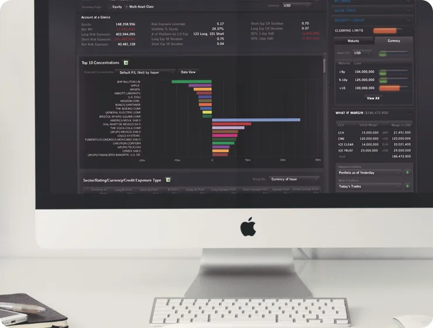
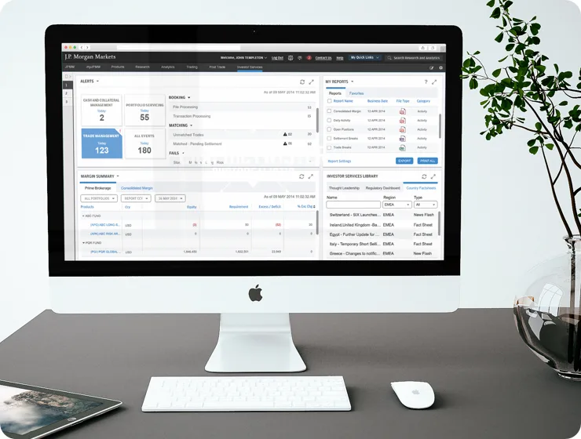
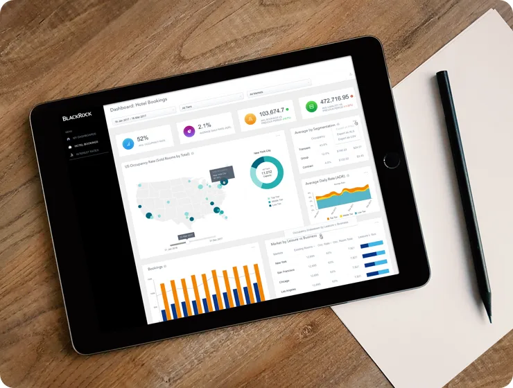

Trading, risk, and compliance tools carry a lot of data. I find out which numbers people act on, and redesign the screen around those.
Chris Yellen · UX design lead · New York
Financial software people can actually use.
For 20 years I've designed the trading, prime brokerage, and compliance tools that people at Morgan Stanley, J.P. Morgan, Goldman Sachs, and Fidelity rely on to do their jobs.
What I believe
Financial software fails when it shows everything at once. My job is to work out what a trader, an analyst, or a compliance officer needs to see first, and design the rest around that.
Selected work
-

Matrix OTC and Prime Brokerage
I designed the trade and custody tools for OTC Clearing and Matrix Prime Brokerage, then the mobile app that put them in the hands of more than 10,000 clients.
Read the case study -
Screens to come
PB Optimize
I lead the in-house UX team for a cloud-based global securities platform. We built its design system, shipped a mobile app with live rates and pricing, and designed a stock screener and sentiment tool.
-

J.P. Morgan Markets
I ran the UX and design team for the Markets portal, covering Credit Trading and Investor Services, and wrote the interaction and brand guidelines every team built from.
-

Deal Lifecycle
I led the sessions that pinned down what bankers needed from a deal pipeline tool, then turned them into process flows and schematics the build team could work from.
-
Compliance portal and Barclays Now
I designed the global compliance portal for regulatory conflicts, set the strategy for a mobile suite of compliance tools, and co-wrote the design system behind them.
-

Data Studio dashboards
A portal for BlackRock's partnership with Google's Data Studio. I designed the interface, the charts, and the style guide that kept every dashboard consistent.
-
Screens to come
Data integrity portal
I designed a reporting dashboard that cut data entry errors and improved 13F compliance, after testing the flow with a clickthrough prototype.
-
Screens to come
Case study to come
Current work. I'll add it once I can share it.
- 20
- years designing web and mobile products
- 7
- global financial firms: Morgan Stanley, Goldman Sachs, J.P. Morgan, BlackRock, Barclays, Deutsche Bank, Fidelity
- 10,000+
- people using the Morgan Stanley Prime Brokerage mobile app I designed
- 3
- design systems built, at Fidelity, Barclays, and Deutsche Bank
What people say
[Placeholder: a product or technology partner on what changed because of your work. Two sentences at most.]
[Placeholder: someone you managed, on what you were like to work for.]
[Placeholder: a senior sponsor, on the business result.]
When to call me
Four problems I get hired to solve.
I work inside product and technology teams, usually for a year or more. Pick the one that sounds like yours.
I build design systems that make many applications look and behave as one. I have done it at Fidelity, Barclays, and Deutsche Bank.
I have run in-house UX teams at Fidelity, J.P. Morgan, and Morgan Stanley: setting direction, reviewing work, and running the research.
I prototype early and test with the people who will use it. At Deutsche Bank a clickthrough prototype let us fix data entry errors before any code was written.
How I work
Three habits from 20 years on the job.
Sit with the users first
Before I draw anything I interview the people who do the work and watch how they do it. The brief is rarely the real problem.
Show it working, early
A prototype people can click settles arguments faster than a document. I build one in the first weeks, then test it.
Leave a system behind
Every engagement ends with guidelines and components the team can keep using after I have gone.
About
I trained as an artist and ended up on trading floors.
I studied studio art at UC Irvine, then spent my first years in web design before running UX for General Electric's retail finance sites. In 2010 Morgan Stanley hired me to lead UX for its prime brokerage tools, and I have worked in financial services ever since.
I run CYUX as a one-person practice. When you hire me you work with me, from the first workshop to the final handoff.
Portrait of Chris goes here
Experience
- Fidelity InvestmentsUser Experience Consultant2019 to present
- BarclaysUser Experience Consultant2019
- Deutsche BankUser Experience Consultant2018 to 2019
- CYUXPrincipal User Experience Designer2018
- BarclaysUser Experience Consultant2014 to 2017
- J.P. MorganUser Experience Director2013 to 2014
- Goldman SachsUser Experience Consultant2013
- Morgan StanleyUser Experience Lead2010 to 2013
- Independent consulting, ChicagoUser Experience Consultant2009 to 2010
- General ElectricUser Experience Director2006 to 2009
Got a screen nobody can read?
Send me a line about what you're building. I answer every message myself.